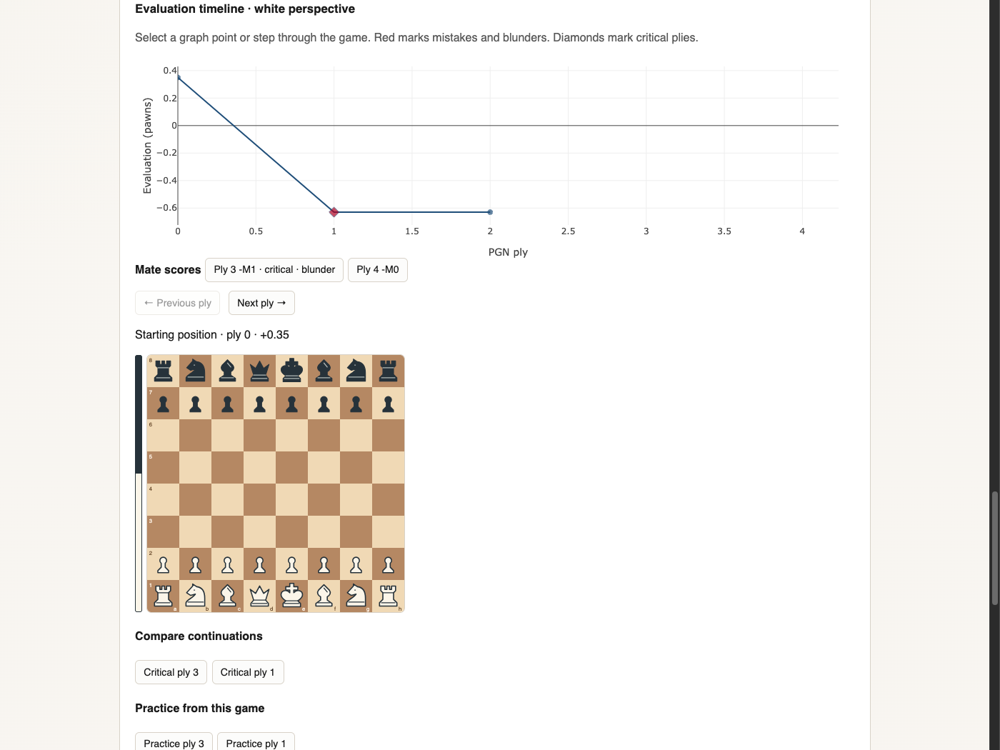
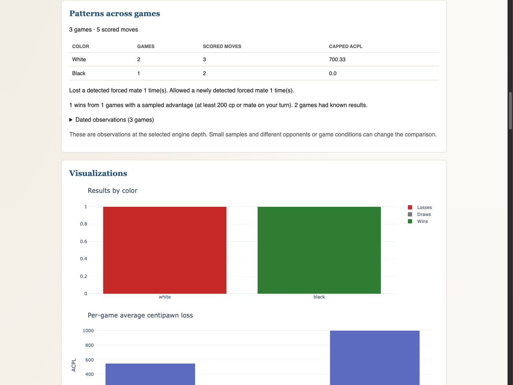

Single-game report
Step through the evaluation timeline, replay turning points, and compare the played moves with Stockfish’s suggestions.
Open single-game demo
Published — v0.2.0
Check yourself before your rating wrecks itself.
An open-source Python library for chess game analysis, interactive performance reports, cross-game analytics, and personalized training exercises powered by Stockfish.
Both demos use synthetic games and run in your browser without an installation.
Step through the evaluation timeline, replay turning points, and compare the played moves with Stockfish’s suggestions.
Open single-game demo
Compare performance across games, find recurring patterns, and try exercises generated from those positions.
Open multi-game demo
Built with Python, Stockfish, python-chess, Plotly.js, GitHub Actions, and PyPI.
Use Python 3.11–3.14 and install Stockfish separately. Put the Stockfish executable on your PATH for engine analysis. The analysis runs locally without an account, API key, or paid inference.
pip install check-yourself-chessFor interactive HTML reports, install the HTML extra. These examples generate a single-game report and a batch report.
python -m pip install 'check-yourself-chess[html]==0.2.0'
check-yourself analyze-pgn game.pgn --color white -o analysis.json --html review.html
check-yourself analyze-pgn batch.pgn --player Alice -o batch.json --html batch.html